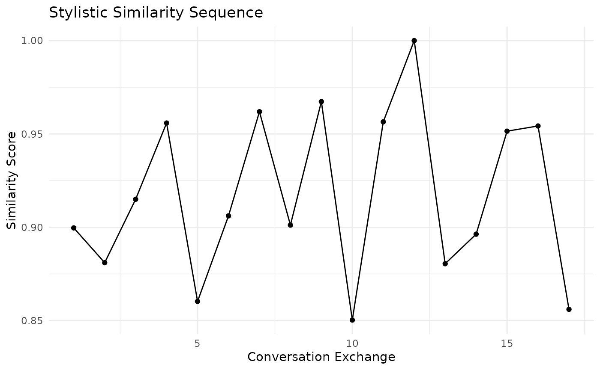

Analyzing Similarities in Conversational Sequence in One Dyad
Source:vignettes/Main_functions_for_conversation_sequence.Rmd
Main_functions_for_conversation_sequence.RmdIntroduction
This vignette demonstrates how to use the conversation similarity sequence functions provided in the package. These functions allow you to analyze various aspects of similarity in conversations over time, including topic, lexical, semantic, stylistic, and sentiment similarities.
Sample Data
Let’s create a sample conversation dataset to work with:
set.seed(123)
conversation <- data.frame(
speaker = rep(c("A", "B"), 10),
processed_text = c(
"Hello how are you today",
"I'm doing well thanks for asking",
"That's great to hear what are your plans",
"I'm planning to go for a walk later",
"Sounds nice the weather is beautiful",
"Yes it's perfect for outdoor activities",
"Do you often go for walks",
"Yes I try to walk every day for exercise",
"That's a great habit to have",
"Thanks I find it helps me stay healthy",
"Have you tried other forms of exercise",
"I also enjoy swimming and yoga",
"Those are excellent choices too",
"What about you what exercise do you prefer",
"I like running and playing tennis",
"Tennis is fun do you play often",
"I try to play at least once a week",
"That's a good frequency to maintain",
"Yes it keeps me active and social",
"Social aspects of exercise are important too"
)
)Topic Similarity Sequence
Let’s start by analyzing the topic similarity sequence:
topic_sim <- topic_sim_seq(conversation, method = "lda", num_topics = 2, window_size = 3)
# Plot the topic similarity sequence
ggplot(data.frame(Segment = 1:3, Similarity = topic_sim$sequence), aes(x = Segment, y = Similarity)) +
geom_line() +
geom_point() +
labs(title = "Topic Similarity Sequence", x = "Conversation Segment", y = "Similarity Score") +
theme_minimal()
Lexical Similarity Sequence
Next, let’s look at the lexical similarity sequence:
lexical_sim <- lex_sim_seq(conversation, window_size = 3)
# Plot the lexical similarity sequence
ggplot(data.frame(Exchange = 1:length(lexical_sim$sequence), Similarity = lexical_sim$sequence),
aes(x = Exchange, y = Similarity)) +
geom_line() +
geom_point() +
labs(title = "Lexical Similarity Sequence", x = "Conversation Exchange", y = "Similarity Score") +
theme_minimal()
Semantic Similarity Sequence
Now, let’s analyze the semantic similarity sequence:
semantic_sim <- sem_sim_seq(conversation, method = "tfidf", window_size = 3)
# Plot the semantic similarity sequence
ggplot(data.frame(Exchange = 1:length(semantic_sim$sequence), Similarity = semantic_sim$sequence),
aes(x = Exchange, y = Similarity)) +
geom_line() +
geom_point() +
labs(title = "Semantic Similarity Sequence", x = "Conversation Exchange", y = "Similarity Score") +
theme_minimal()
Stylistic Similarity Sequence
Let’s examine the stylistic similarity sequence:
stylistic_sim <- style_sim_seq(conversation, window_size = 3)
# Plot the stylistic similarity sequence
ggplot(data.frame(Exchange = 1:length(stylistic_sim$sequence), Similarity = stylistic_sim$sequence),
aes(x = Exchange, y = Similarity)) +
geom_line() +
geom_point() +
labs(title = "Stylistic Similarity Sequence", x = "Conversation Exchange", y = "Similarity Score") +
theme_minimal()
Sentiment Similarity Sequence
Finally, let’s analyze the sentiment similarity sequence:
sentiment_sim <- sent_sim_seq(conversation, window_size = 3)
# Plot the sentiment similarity sequence
ggplot(data.frame(Exchange = 1:length(sentiment_sim$sequence), Similarity = sentiment_sim$sequence),
aes(x = Exchange, y = Similarity)) +
geom_line() +
geom_point() +
labs(title = "Sentiment Similarity Sequence", x = "Conversation Exchange", y = "Similarity Score") +
theme_minimal()
Conclusion
This vignette demonstrates how to use various functions to analyze different aspects of similarity in conversations. By examining topic, lexical, semantic, stylistic, and sentiment similarities, researchers can gain insights into the dynamics of conversations and how they evolve over time.
These tools can be particularly useful in fields such as linguistics, psychology, and communication studies, where understanding the nuances of conversation patterns is crucial.